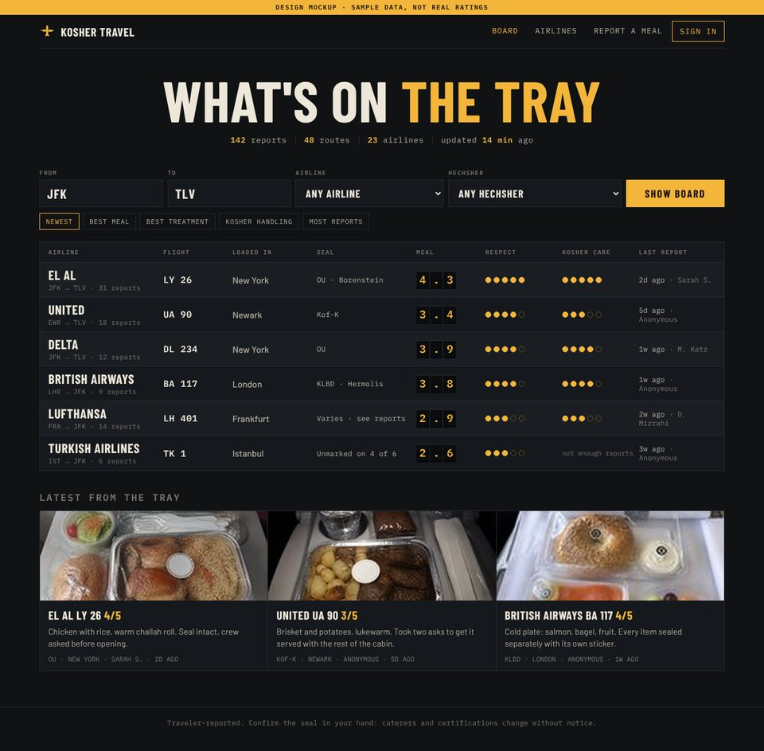
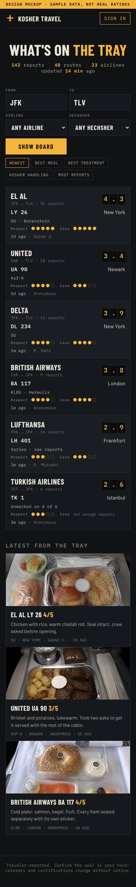
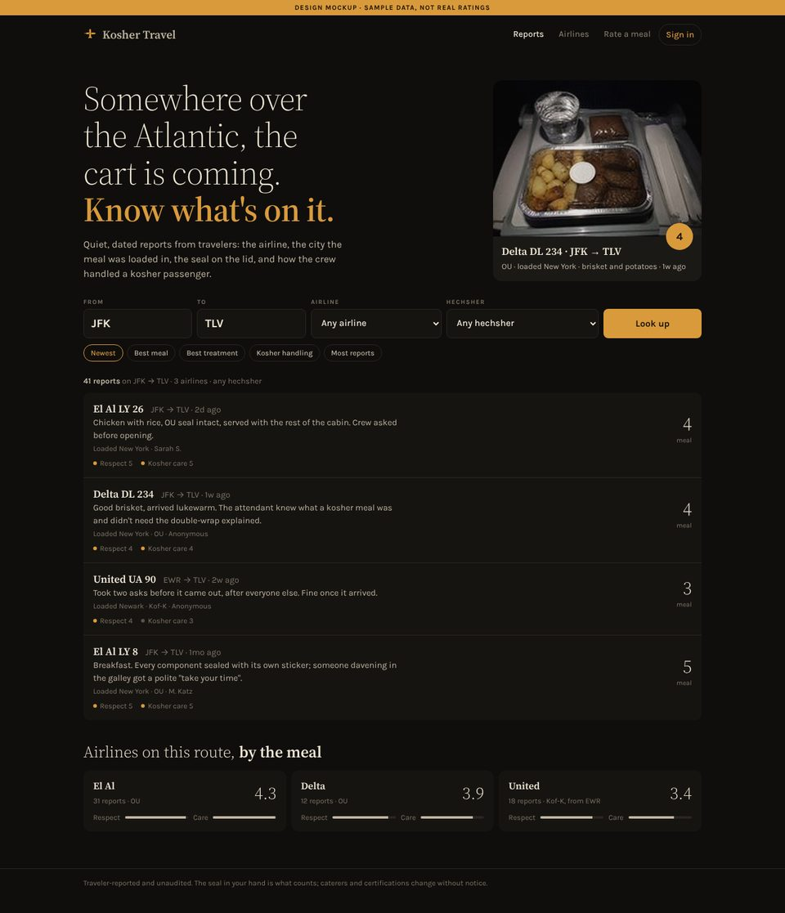
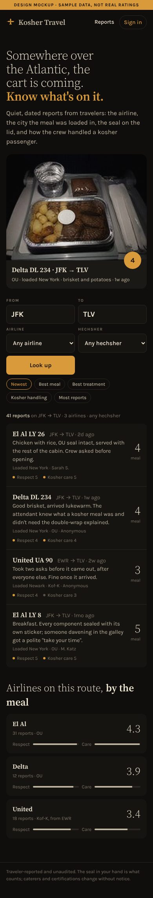
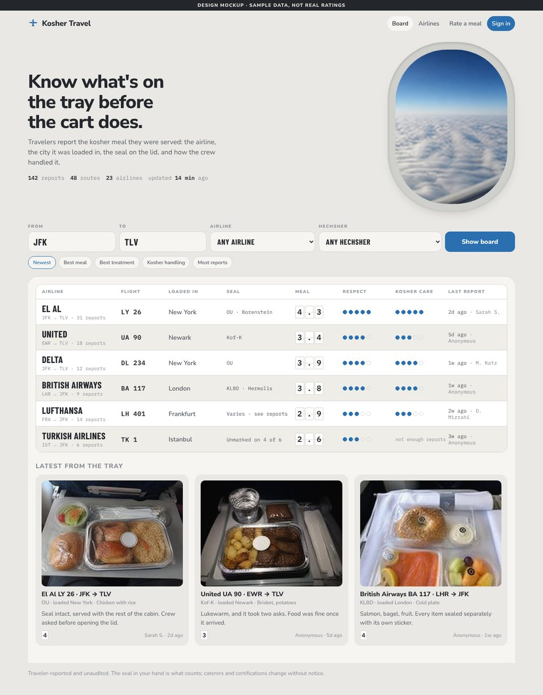
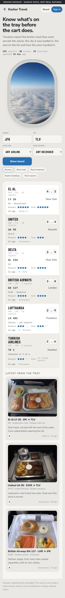
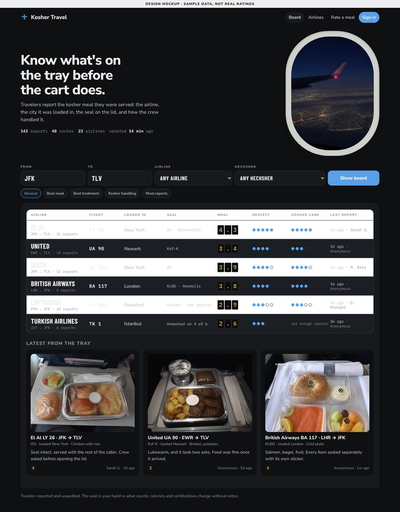
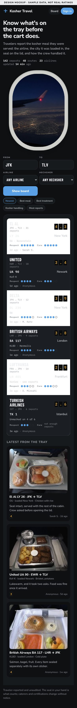
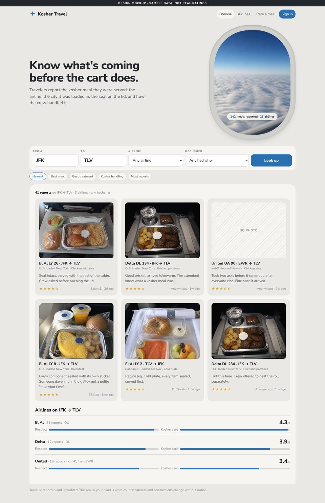
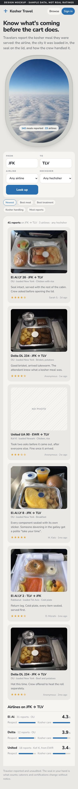

A site where travelers rate kosher inflight meals: the airline, the flight, the city the meal was loaded in, the hechsher on the seal, a score, photos, and how the crew treated them. These are four candidate designs for its home page. Each is a live page with sample data; open them on a phone as well as a desktop.
All four share the same search: From, To, Airline, Hechsher, and sort chips. They differ in what the results look like and in mood.
An arrivals-hall departures board. The whole home page is one table: airline, flight, the city the meal was loaded in, the seal, the meal score in amber flap digits, and the two treatment scores as filled dots. Ink black and amber, condensed type. Dark only.


The dimmed cabin on an overnight flight. Near-black, one warm reading light on the featured tray, everything else low and quiet. Light serif, one amber. Reports in a single readable column, airlines as small tiles below. Dark only.


A's table and search inside a light cabin: an oval window onto the sky, rounded controls, soft greys. The score cells are plain white cells with ink digits in light mode; in dark mode the page dims, the window shows a night sky, and the cells become the amber flap digits from A. Follows the phone's light or dark setting.




The same light cabin and oval window, with results as photo cards on the tray table rather than a table. The friendliest of the four. Airline comparison bars sit at the bottom. Light only.


All ratings, airlines, hechsherim and quotes are invented sample data for design review. The tray and sky photos are AI-generated placeholders at low resolution. Nothing here is a real review.